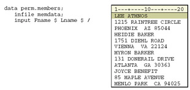

Overview
Introduction
Information for one observation can be spread out over several records. You can write multiple INPUT statements to read each record that comprises a single observation, as in this example:
Or, you can write one INPUT statement that contains a line pointer control to specify the record(s) from which values are to be read, as in this example:
Objectives
In this chapter, you learn to
- read multiple records sequentially and create a single observation
- read multiple records non-sequentially and create a single observation
Use Line pointer Controls
You know that as SAS reads raw data values, it keeps track of its position with an input pointer. You have used column pointer controls and column specifications to determine the column placement of the input pointer.
| Column Specifications | input Name $ 1-12 Age 15-16 Gender $ 18; |
| Column Pointer Controls | input Name $12. @15 Age 2. @18 Gender $1.; |
There are two types of line pointer controls
- The forward slash (/) specifies a line location that is relative to the current one
- The #n specifies the absolute number of the line to which you want to move the pointer
First we'll look at the forward slash (/). Later in this chapter, you'll learn how to use the #n, and you will see how these two controls can be combined.
You use the forward slash (/) line pointer control to read multiple records sequentially. The /
advances the input pointer to the next record. The / line pointer control only moves the input
pointer forward and must be specified after the instructions for reading the values in the current
record.
The single INPUT statement below reads the values for Lname and Fname in the first record,
followed by the values for Department and JobCode in the second record. Then the value for
Salary is read in the third record.
Take a closer look at using the forward slash (/) line pointer control in the following example.
The raw data file Memdata contains the mailing list of a professional organization. Your task is to combine the information for each member into one data set observation. We’ll begin by reading each member’s name, followed by the street address, and finally the city, state, and zip code.
- As you write the instructions to read the values for Fname and Lname, notice that not all of the values for Lname begin in the same column. So, you should use standard list input to read these values
- Now you want to read the values for Address from the second record. The / line pointer control advances the input pointer to the next record. At this point the INPUT statement is incomplete, so you should not place a semicolon after the line pointer control 
- You can use column input to read the values in the next record as one variable named Address. Then add a line pointer control to move the input pointer to the next record
-
As you write the statements to read the values for City, notice that one of the values is
longer than eight characters and contains embedded blanks. Also note that each value is
followed by two consecutive blanks. To read these values, you should use modified list
input with the ampersand (&) modifier.
The values for State and the values for Zip do not begin in the same column. Therefore, you should use list input to read these values
Sequential Processing of Multiple Records in the DATA Step
Now that you’ve learned the basics of using the / line pointer control, let’s take a closer look at the
sequential processing of multiple records in the DATA step.
During compilation, the program data vector is created for the Perm.Members data set. When
the DATA step executes, the values in the first record are read, and the / line pointer control
moves the input pointer to the second record.
The values for Address are read, and the second / line pointer control advances the input pointer to the third record.
The values for City, State, and Zip are read, and the INPUT statement is completely executed.
The values in the program data vector are written to the data set as the first observation.
Control returns to the top of the DATA step, and the variable values are reinitialized to missing.
During the second iteration, values for Fname and Lname are read beginning in column one of the fourth record.
The values for Address are read and the / line pointer control advances the input pointer to the fifth record.
The values for City, State, and Zip are read, and the INPUT statement is completely executed.
The values in the program data vector are written to the data set as the second observation.
After the data set is complete, PROC PRINT output for Perm.Members shows that a single observation contains the complete information for each member.
proc print data=perm.members; run;
| Obs | Fname | Lname | Address | City | State | Zip |
|---|---|---|---|---|---|---|
| 1 | LEE | ATHNOS | 1215 RAINTREE CIRCLE | PHOENIX | AZ | 85044 |
| 2 | HEIDIE | BAKER | 1751 DIEHL ROAD | VIENNA | VA | 22124 |
| 3 | MYRON | BARKER | 131 DONERAIL DRIVE | ATLANTA | GA | 30363 |
| 4 | JOYCE | BENEFIT | 85 MAPLE AVENUE | MENLO PARK | CA | 94025 |
Number of Records per Observation
Note that the raw data file must contain the same number of records for each observation that is being created.
For example, suppose there are only two records for the second member. However, the INPUT statement is set up to read three records.
The second member's name and address are read and assigned to corresponding variables. Then the input pointer advances to the next record, as directed by the INPUT statement, and the third member's name is read as a value for City.
The DATA step is still looking for a value for State and Zip, so the input pointer advances to the next record and reads the values for the member's address.
The PROC PRINT output for this data set illustrates the problem.
| Obs | Fname | Lname | Address | City | State | Zip |
|---|---|---|---|---|---|---|
| 1 | LEE | ATHNOS | 1215 RAINTRE E CIRCLE | PHOENIX | AZ | 85044 |
| 2 | HEIDIE | BAKER | 1751 DIEHL ROAD | MYRON BARK | 131 | DONERAIL |
| 3 | ATLANTA | GA | JOYCE BENEFIT | 85 MAPLE A | MENLO | PARK |
So, before you write the INPUT statement, ensure that the raw data file contains the same number of records for each observation.
| Note | For more information about working with raw data files that contain missing records, see the SAS documentation. |
|---|
Reading Multiple Records Non-Sequentially
The #n Line Pointer Control
You already know how to read multiple records sequentially by using the / line pointer control. Now let's look at reading multiple records non-sequentially by using the #n line pointer control.
The #n specifies the absolute number of the line to which you want to move the input pointer. The #n pointer control can read records in any order; therefore, it must be specified before the instructions for reading values in a specific record.
The INPUT statement below first reads the values for Department and JobCode in the second record, then the values for Lname and Fname in the first record. Finally, it reads the value for Salary in the third record.
Example: Using the #n Line Pointer Control
Take a closer look at using the #n line pointer control in the following example.
The raw data file Patdata contains information about the patients of a small group of general surgeons.
The first three records contain a patient’s name, address, city, state, and zip code. The fourth record contains the patient’s ID number followed by the name of the primary physician.
Suppose you want to read each patient’s information in the following order:
- ID number (ID)
- first name (Fname)
- last name (Lname)
- address (Address)
- city (City)
- state (State)
- zip (Zip)
- doctor (Doctor)
To read the values for ID in the fourth record, specify #4 before naming the variable and defining its attributes.
To read the values for Fname and Lname in the first record, specify #1 before naming the variables and defining their attributes.
Use the #n line pointer control to move the input pointer to the second record and read the value for Address.
Now move the input pointer to the third record and read the values for City, State, and Zip, in that order.
Note In this raw data file, the values for City contain eight or fewer characters and do not contain embedded blanks. So, you can use standard list input to read these values. Now you need to move the input pointer down to the fourth record to read the values for Doctor, which begin in column 7. Don't forget to add a semicolon at the end of the INPUT statement. A RUN statement completes the program.
Execution of the DATA Step
The #n pointer controls in the program below cause four records to be read for each execution of the DATA step.
data perm.patients;
infile patdata;
input #4 ID $5.
#1 Fname $ Lname $
#2 Address $23.
#3 City $ State $ Zip $
#4 @7 Doctor $6.;
run;
The first time the DATA step executes, the first four records are read, and an observation is written to the data set.
During the second iteration, the next four records are read, and the second observation is written to the data set, and so on.
The PROC PRINT output of the data set shows how information that was spread over several records has been condensed into one observation.
proc print data=perm.patients noobs; run;
| ID | Fname | Lname | Address | City | State | Zip | Doctor |
|---|---|---|---|---|---|---|---|
| XM034 | ALEX | BEDWAN | 609 WILTON MEADOW DRIVE | GARNER | NC | 27529 | FLOYD |
| XF124 | ALISON | BEYER | 8521 HOLLY SPRINGS ROAD | APEX | NC | 27502 | LAWSON |
| XF232 | LISA | BONNER | 109 BRAMPTO N AVENUE | CARY | NC | 27511 | 27511/td> |
| XM065 | GEORGE | CHESSON | 3801 WOODSID E COURT | GARNER | NC | 27529 | FLOYD |
Combining Line Pointer Controls
The forward slash (/) line pointer control and the #n line pointer control can be used together in a SAS program to read multiple records both sequentially and non-sequentially.
For example, you could use both the / line pointer control and the #n line pointer control to read the variables in the raw data file Patdata in the following order:
| 1. ID | 5. City |
| 2. Fname | 6. State |
| 3. Lname | 7. Zip |
| 4. Address | 8. Doctor |
- To read the values for ID in the fourth record, specify #4 before naming the variable and defining its attributes.
- Specify #1 to move the input pointer back to the first record, where the values for Fname and Lname are read.
- Because the next record to be read is sequential, you can use the / line pointer control after the variable Lname to move the input pointer to the second record, where the value for Address is read.
- The / line pointer control in the next line directs the input pointer to the third record, where the values for City, State, and Zip are read.
- The final / line pointer control moves the input pointer back to the fourth record, where the
value for Doctor is read.
Note Alternatively, you can use only the #n line pointer control (as shown earlier in this chapter and below) to read the variables in the order shown above.
Summary
Text Summary
Multiple Records Per Observation
Information for one observation can be spread out over several records. You can write one INPUT statement that contains line pointer controls to specify the records from which values are read.
Reading Multiple Records Sequentially
The forward slash (/) line pointer control is used to read multiple records sequentially. Each time a / pointer is encountered, the input pointer advances to the next line.
Reading Multiple Records Non-Sequentially
The #n line pointer control is used to read multiple records non-sequentially. The #n specifies the absolute number of the line to which you want to move the pointer.
Combining Line Pointer Controls
The / line pointer control and the #n line pointer control can be combined within a SAS program to read multiple records both sequentially and non-sequentially.
Points to Remember
- When a file contains multiple records per observation, the file must contain the same number of records for each observation that is being created.
- Because the / pointer control can only move forward, the pointer control is specified after the values in the current record are read
- The #n pointer control can read records in any order and must be specified before the variable names are defined.
- A semicolon should be placed at the end of the complete INPUT statement.